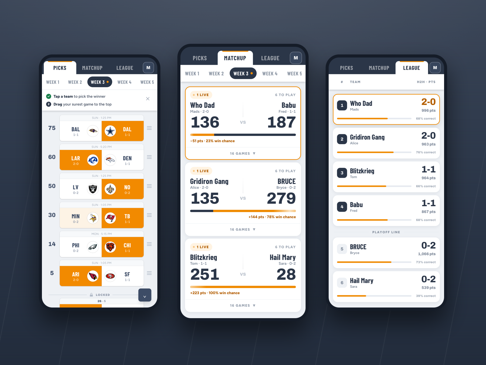
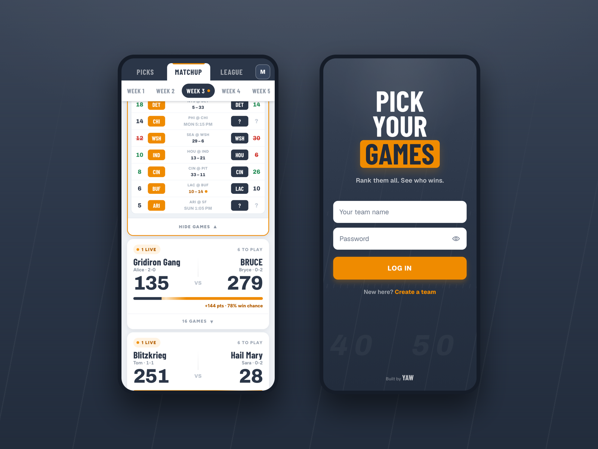

Project
Pick Your Games
Overview
I built Pick Your Games, an NFL confidence pool that runs at pickyour.games, where real players are picking against each other every week of the season.
The idea is simple: each week you pick a winner for every NFL game, then drag your picks into confidence order. Your surest pick sits at the top and is worth 100 points; the ladder descends from there. Correct picks score, and every week you face one other player head-to-head. Win your matchup and you climb the league table toward the playoffs at the end of the season.
Most of the interaction design went into making picking feel physical. The board is a drag-to-rank list where each game locks into place at kickoff, wherever you left it. Matchup cards show a live tug-of-war bar with your actual win probability, computed by enumerating every possible outcome of the remaining games rather than estimating. Tap a card and it unfolds into a full ledger comparing both boards game by game, with your opponent's picks hidden face-down until each game kicks off. All of it was prototyped in the working app and refined with the people actually playing it, including a long stretch of invisible work keeping drag-and-drop trustworthy on iOS.
I designed the whole visual system for it: a navy and orange palette borrowed from stadium lights, condensed athletic type, and a folder-tab header where the active tab is cut from the surface beneath it. Small rules keep the game fair without anyone noticing, like an invisible auto-pick that quietly gives absent players the betting favorite so nobody forfeits a week.
Under the hood it's a Next.js app with a SQLite database, pulling live scores from ESPN, self-hosted on a Raspberry Pi in my house behind a Cloudflare tunnel. The best part is that it's not a demo. Friends and family have their teams registered, and the season opens with all of us watching the same scoreboard.

